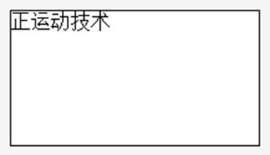
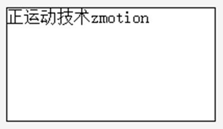
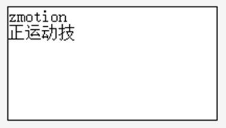

|
类型 |
控件操作指令 |
|
描述 |
在“字符显示”元件中追加字符串 注：使用该指令需在元件“属性”中设置为多行文本状态才生效。 |
|
语法 |
HMI_STRAPPEND (strAppend, winid, controlid, mode [,ifNewLine]) strAppend：追加的字符串 winid：HMI文件里面窗口编号 controlid：元件编号 mode：追加模式（bit），按bit0和bit1的组合值确定模式。（当字符串超过最大字符数限制时，会对添加后的总字符串按模式清除溢出部分） bit0：溢出方向 0 - 超限从末尾处清除溢出部分，即超限部分不追加 1 - 从字符串开头处清除溢出部分 bit1：追加方向 0 �C 从末尾处追加，滚动条自动跟随到文本末尾处 1 �C 从起始处追加，滚动条自动跟随到文本起始处 ifNewLine：是否追加新行，缺省0（否） 注：追加新行默认占用一个字符空间 |
|
适用控制器 |
支持RTHmi |
|
例子 |
例一：HMI_STRAPPEND ("zmotion",10, 2, 0, 0) '向元件文本末尾处追加一行字符串   例二：对元件文本限制字符数为16，对该元件追加文本 HMI_STRAPPEND ("zmotion",10, 2, 2, 1) '向元件文本起始处追加字符串，且追加新行 运行效果如下：仅显示不超过16个字符数的内容，且从末尾处清除溢出部分  |